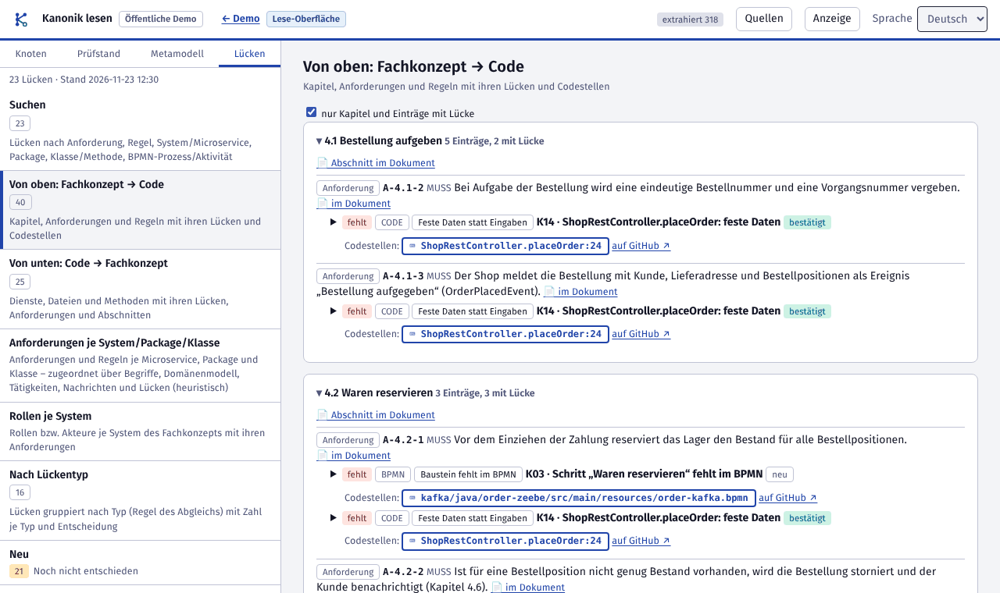
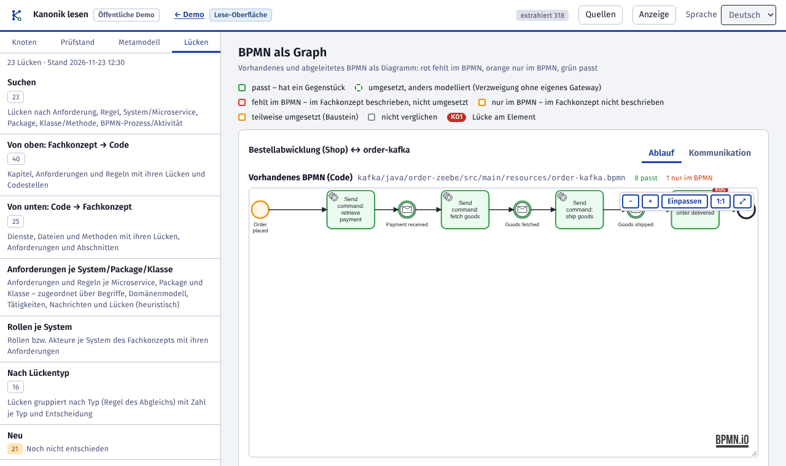
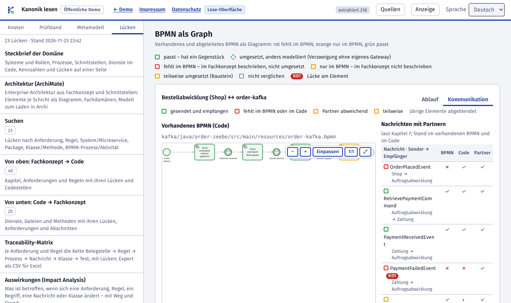
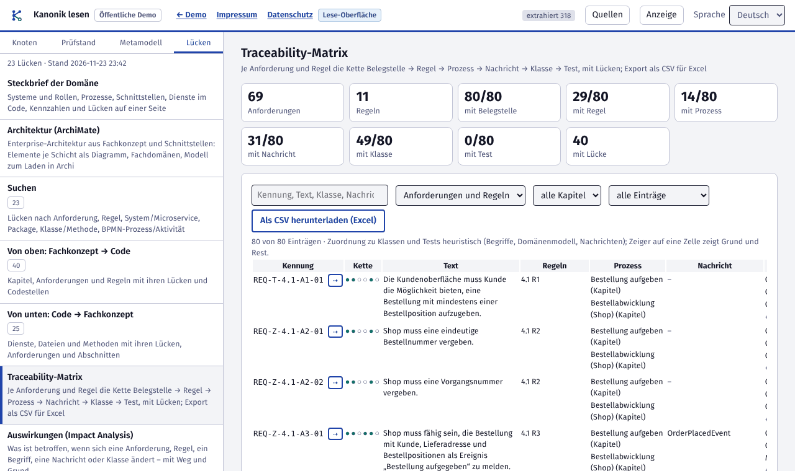
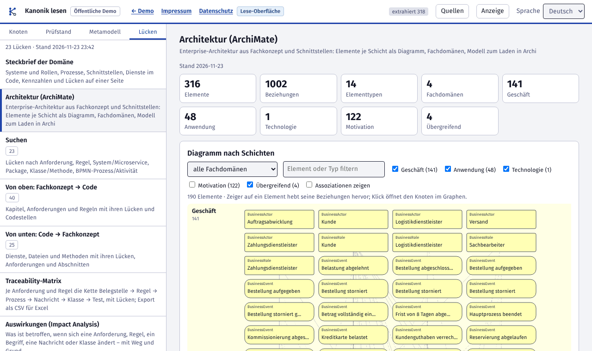

Online-Handel: Bestellabwicklung
Bestellung, Zahlung, Lager und Versand – Fachkonzept gegen BPMN-Prozesse und Kafka-Microservices.
Steckbrief
Ganzer Steckbrief in der Lese-Oberfläche →
Wie dieses Beispiel entstand
Auswahl
Ein bekanntes Referenzbeispiel für Microservices mit Ereignissen: flowing-retail von Bernd Rücker, Variante Kafka mit Java und Zeebe. Sechs Dienste (Checkout, Order, Payment, Inventory, Shipping, Monitor) sprechen über ein Kafka-Topic miteinander; Bestellung und Zahlung laufen als BPMN-Prozesse. So lassen sich Fachkonzept, Prozessmodelle und verteilter Code gleichzeitig abgleichen.
Vorbereitung
Das Fachkonzept der Bestellabwicklung haben wir für diese Demo selbst geschrieben: Rollen, Begriffe, Abläufe von der Bestellung bis zum Versand, Regeln, Anforderungen, Domänenmodell und eine Nachrichtentabelle. Festgelegt wurden die Variante und der Commit des Codes, die drei BPMN-Dateien des Projekts und eine Liste erwarteter Lücken als Testorakel. Die Extraktion durch ein Sprachmodell wurde geprüft und übernommen; danach läuft alles ohne Sprachmodell.
Was Kanonik gemacht hat
Kanonik hat das Fachkonzept in einen Wissensgraphen übersetzt, BPMN und ein Domänenmodell abgeleitet und die vorhandenen BPMN-Prozesse und den Code aller Dienste gelesen: Kafka-Nachrichten, Zeebe-Worker, Prozessstarts, Korrelationen. Aus dem Code entstanden eine OpenAPI- und eine AsyncAPI-Beschreibung – welcher Dienst welche Nachricht über welches Topic sendet oder empfängt, mit Verweis auf jede Codestelle. Der Abgleich Fachkonzept ↔ BPMN ↔ Code ergibt die Lückenliste, gemessen am Testorakel.
Geführte Tour
- Das Fachkonzept
Hauptprozess Bestellabwicklung und Teilprozess Zahlung mit Anforderungen und Geschäftsregeln. →
- Die Lücken
Zum Beispiel: keine Reservierung vor der Zahlung, eine gescheiterte Zahlung wird nicht gemeldet. →
- Geprüft gegen ein Testorakel
Die erwarteten Lücken stehen unabhängig vom Abgleich fest; die Trefferquote steht über der Liste. → - BPMN als Graph
Das vorhandene BPMN neben dem aus dem Fachkonzept abgeleiteten: rot fehlt im Modell, orange gibt es nur im Modell, grün passt. →
- Kommunikation
Welche Nachricht laut Fachkonzept von wem an wen geht – und wo das Modell und der Code sie wirklich senden und empfangen. →
- Von der Anforderung bis zur Klasse
Die Traceability-Matrix zeigt je Anforderung die Kette Belegstelle → Regel → Prozess → Nachricht → Klasse → Test; ⇢ zeigt, was eine Änderung betrifft. →
- Architektur
Das ArchiMate-Modell der Domäne nach Schichten – zum Ansehen und als Datei für Archi. →
Fachkonzept ansehen
Lücken
24 Lücken zwischen Fachkonzept, BPMN und Code
Architektur (ArchiMate)
Enterprise-Architektur der Domäne nach ArchiMate 3.2, abgeleitet aus Fachkonzept und Schnittstellen: 316 Elemente, 1017 Beziehungen.
Diagramm nach Schichten ansehen →
model.xml für Archi herunterladen (Datei → Importieren → Open Exchange XML Model)
Schnittstellen aus dem Code
Das Projekt hat keine Schnittstellenbeschreibung. Kanonik hat sie aus dem Quelltext erzeugt: OpenAPI für REST, AsyncAPI für Ereignisse und Nachrichten. Jedes Element verweist auf seine Codestelle (x-kanonik-code).
3 REST-Operationen, 15 Ereignis-Operationen, 8 Nachrichten →
Graph und Suche (Lese-Oberfläche)
Graph und Suche (Lese-Oberfläche) →
Quellen und Rechte
Fachkonzept für diese Demo geschrieben; Prozesse und Code aus flowing-retail (Bernd Rücker, Apache-2.0).